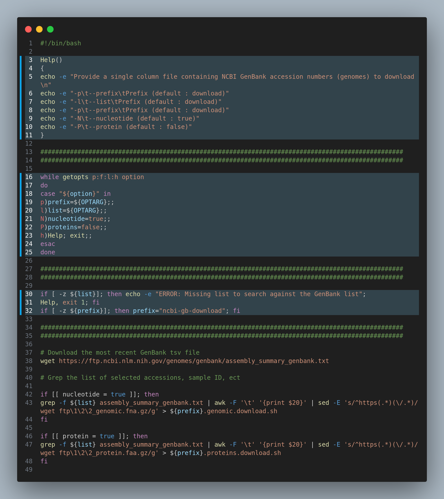

Why should you be writing modular scripts? How can you get started with them?
⮕ Part 2
Writing modular scripts
Why write modular scripts?
For a long time, my bioinformatics analyses were slow and laborious. This was mostly because my scripts were built specifically for a particular sample (or set of samples). This approach likely stems from the way most bioinformatics courses and tutorials are taught—running a single sample through a process at a time, then using loops to parse multiple samples.
The problem is that once the amount of data scales up, over-relying on loops to process every sample at each step can make scripts painfully slow and limiting. Paths are often hard-coded to a particular directory, variables may be specific to a single server, and so on. While this is a common way to handle genomic analysis and data processing, it quickly falls apart when you move institutes, share your scripts, or try to make your work publicly available.
BASH isn’t always the best language for modular, scalable workflows (Python is a strong alternative), but if you’re comfortable with a little BASH and haven’t had time to dive into Python yet, this guide is for you. It will help you start writing multi-sample scripts that can be submitted to a server, generate data consistently, and be easily shared with colleagues—or deposited directly into project repositories for reviewers and readers to use.
Aims:
The main aim of this series of posts is to show you ways to write BASH, R and Python scripts that:
- Perform single/limited function(s) - suitable for any appropriate data-type for that function/programme (modular scripts)
- Using data located in any part of the computer/server
- Producing outputs in a default or specified location/name
- Has useful help messages
- Produces usefull error mesages
- Can be submited to any server type (e.g. SunCluter, SLURM).
Definitions
Many of these terms and phrases should already be familiar if you’ve been running commands in a terminal or submitting jobs to a high-performance computer. Some of the terms are my own descriptions — they might not be universally recognized, but they reflect how I think about them (see Table 1).
| Term | Definition |
|---|---|
| Functions | A Bash function is a block of reusable code designed to perform a particular operation. Once defined, the function can be called multiple times within a script. |
| HPC | High performing computers |
Loops: for |
A BASH for loop is a programming language statement which allows code to be repeatedly executed for a selection of data (i.e. for file in read/*R1_fastq.gz; do | meaning for every R1 file in the reads directory, perform the following) |
Loops: until |
A BASH until loop is executes a code block repeatedly until a specific condition becomes true. |
Loops: while |
Perform an action while an expression is true, keep executing these lines of code. |
| Modular scripts | Scripts that are not limited by location or data, and can be chained by a workflow manager |
| HPS: Modules | The module system is a concept available on most supercomputers, simplifying the use of different software (versions) in a precise and controlled manner. |
| Pipeline | A pipeline is a series of processes, usually linear, which filter or transform data. The processes are generally assumed to be running concurrently. The first process takes raw data as input, does something to it, then sends its results to the second process, and so on, eventually ending with the final result being produced by the last process in the pipeline. Pipelines are normally quick, with a flow taking seconds to hours for end-to-end processing of a single set of data. |
Statements: elif |
The elif statement, stands for “else if”. It can be used in conditional statements to check for multiple conditions. For example, if the first condition is false, it moves on to the next “elif” statement to check if that condition is true. |
Statements: else |
An else statement pecifies that alternate processing is to take place when the conditions of the matching IF statement are not satisfied |
Statements: if |
An if statement is a programming construct that allows you to make decisions based on certain conditions. It helps you control the flow of your program by executing different blocks of code depending on whether a given condition is true or false. |
| Variable | A BASH variable acts as temporary storage for a string or a number. Variables also make it easy for users to write complex functions and perform various operations. Users can create variables by giving them a name and a value. A name can be anything. (e.g. ${input}) |
| Workflow | a set of processes, usually non-linear, often human rather than machine, which filter or transform data, often triggering external events. The processes are not assumed to be running concurrently. The data flow diagram of a pipeline can branch or loop. There may be no clearly defined “first” process – data may enter the workflow from multiple sources. Any process may take raw data as input, do something to it, then send its results to another process |
Modular scripts
Since most scripts are sent to a computing cluster, they generally need to be written as BASH scripts (some servers do accept Python, though I’ve had issues with activating Conda in the past). For simple local tasks—like using seqkit to check the number of reads in a FASTQ or FASTA file — I often just run commands directly. But for more complex processes, such as genome assembly and quality-checking contigs, I write scripts that I can submit to the cluster.
I find it really helpful to approach script writing with modularity in mind (Figure 1). This means breaking down a workflow into individual functions or steps, figuring out the inputs and outputs at each step or for each tool, and designing it so that data from any project can be fed in, with the outputs ready for the next step.
Taking this modular approach also makes it easier to combine multiple scripts into a larger pipeline using workflow managers like NextFlow or Snakemake. This allows you to automate an entire process, for example:
raw FASTQ → adaptor trimming and QC → assembly → contig QC → annotation → phylogeny
You don’t always need to write your own pipeline — there are plenty of tools available for bacterial and viral genomics. But if you’re working with a non-model organism, or need to use tools specifically tailored to a particular species, of there is an analysis you expect to be repeating with any regularity, building your own modular workflows can save a lot of time and make your analyses more reproducible and shareable with colleagues.

I like to think of scripts as often composed of three parts, a set-up, the main, and the closing. The set up for the script will include things such as defining argument flags, parameters, opening virtual environments (if needed), help function, setting up a log output. The main body will compose of the primary purpose of the scripts, to run a specific or series of programmes, and the closing of the script will include anything got wrap it all up.
This tutorial will mostly discuss the setup of a script, as that is where you can refine your script to be modular. In the example bellow you can see highlighted the what that setup might look like (Figure 2.).
